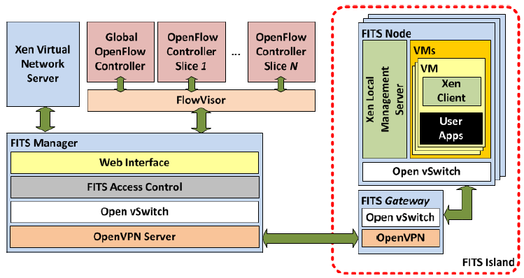
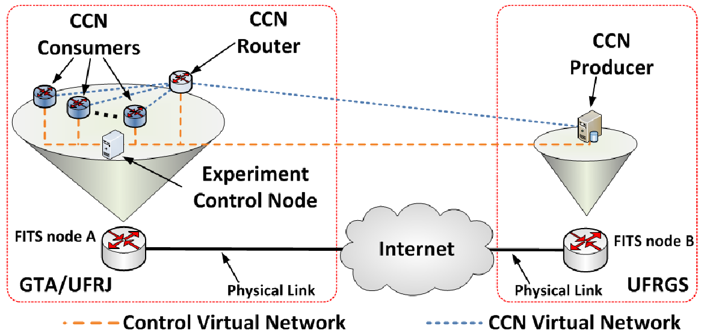
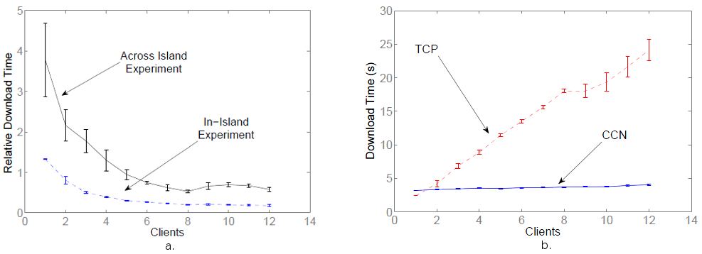

Experimentos com o FITS
O FITS (Future Internet Testbed with Security) é um ambiente de virtualização de redes que foi utilizado para a realização de experimentos [6] em uma CCN. Tais experimentos visaram o estudo do comportamento e fluxo de uma rede nesse modelo, levando a resultados promissores

Imagem 1. FITS experimentation platform. [6]
A rede utilizada nesse projeto é baseada no interesse e na paridade do pacote de conteúdo e foi implementada como uma rede virtual no FITS, estando ilustrada na imagem 2. A rede redireciona o interesse por um determinado conteúdo ao publicador que, então, envia o conteúdo seguindo o caminho pelo qual o interesse foi direcionado. Nessa rede o roteamento se dá por meio de três estruturas principais: Content Store (CS), Forwarding Information Base (FIB) e Pending Interest Table (PIT). Esta armazena os dados relativos às interfaces com as quais os pacotes de interesse foram encaminhados Essa funciona tal qual o IP na internet, estabelecendo uma tabela de prefixos de forma a hierarquizar a rede. Aquela é a estrutura responsável pelos caches da rede.

Imagem 2. Redes virtuais usadas nos experimentos. [6]
Um dos experimentos realizados consistiu em comparar os tempos de download entre uma CCN e uma rede TCP/IP. Foram estabelecidos dois casos: In-island, com todas as máquinas virtuais contidas em um dos nós da rede, e Across Island, no qual há dois nós e as máquinas estão distribuídas pela internet. A comparação do tempo de download entre a rede TCP e a CCN, para o primeiro caso, é vista no item b da imagem 3, enquanto a comparação entre os dois casos estudados é vista no item a da imagem 3.

Imagem 3. Tempos de download. [6]
Esses resultados indicam que, como era esperado, as taxas de download para a CCN superam as da rede TCP quando existem mais de um usuário fazendo o download do arquivo observado. Ademais, notamos que o comportamento para ambos os casos de rede CCN estudados é similar.
Outros pontos observados estão relacionados ao overhead proporcionado pela implementação proposta. Como o conteúdo não se encontra inicialmente no nó mais próximo, ele deve ser descarregado nesse nópara que a transmissão ao destino possa começar, o que provoca um delay inicial com relação à rede TCP. Além disso, como a CCN está utilizando IP, existe uma carga adicional ocasionada por seu cabeçalho. Porfim, apesar do overhead de 19% introduzido em relação à rede TCP, o tempo de download, conforme o número de usuários aumenta, foi aproximadamente 25% menor.